Bio
𝒯𝒾𝒶𝓃 𝒯𝒶𝓃 𝐵𝓊𝒹𝒹𝒽𝒶, 𝐻𝑜𝓃𝑔 𝒦𝑜𝓃𝑔
I am a Ph.D. student in Computer Engineering at Boston University, under the supervision of Prof. Vijaya Kolachalama. Prior to BU, I received my M.Phil. degree (2023) in Computer Science from City University of Hong Kong, supervised by Prof. Shiqi Wang, and B.Eng. degree (2020) in Intelligence Science and Technology from Northeast Electric Power University, supervised by Prof. Yimin Hou and Prof. Jinglei Lv. In 2017, I attended a summer school at University of California, Irvine. I am a member of a research lab that emphasizes a 𝘁𝗲𝗮𝗺-𝗳𝗶𝗿𝘀𝘁 culture and values 𝗾𝘂𝗮𝗹𝗶𝘁𝘆, 𝗶𝗻𝘁𝗲𝗴𝗿𝗶𝘁𝘆, 𝗹𝗲𝗮𝗱𝗲𝗿𝘀𝗵𝗶𝗽, and 𝘀𝗲𝗿𝘃𝗶𝗰𝗲. My goal is to translate cutting-edge research into impactful clinical applications.
I’m also a 𝗪𝗲𝗱𝗱𝗶𝗻𝗴, 𝗣𝗼𝗿𝘁𝗿𝗮𝗶𝘁, 𝗮𝗻𝗱 𝗘𝘃𝗲𝗻𝘁 𝗣𝗵𝗼𝘁𝗼𝗴𝗿𝗮𝗽𝗵𝗲𝗿 based in Boston, MA. If you’d like to book a session, I’d love to hear from you—just send me an email!
Check out my collections here!
𝗞𝗲𝘆 𝗤𝘂𝗲𝘀𝘁𝗶𝗼𝗻𝘀:
- What impact can a TEAM of top multidisciplinary scientists have?
- What kinds of VALUE can we researchers bring to society?
- What is the most surprising FINDING in your research?
𝗥𝗲𝘀𝗲𝗮𝗿𝗰𝗵 𝗜𝗻𝘁𝗲𝗿𝗲𝘀𝘁𝘀:
My Ph.D. research focuses on AI Grounding [Continual Pre-training, Retrieval-augmented Generation (RAG), Agentic RAG System] as a pathway toward Artificial General Intelligence (AGI) for Medicine, with an emphasis on developing safe, reliable, and extensible foundations. Specifically, my work focuses on the following dimensions:
- PodGPT: An audio-augmented LLM for research and education
- PodRAG: PodGPT with a retrieval, reranking, and generation pipeline
- EEG-DL: A deep learning library for EEG signals classification
- Prompt Perturbation: A perturbation toolkit for prompt augmentation
Research Focus Illustration
Research Presentations and Resources
𝐖𝐡𝐚𝐭 𝐢𝐬 𝐭𝐡𝐞 𝐦𝐨𝐬𝐭 𝐬𝐮𝐫𝐩𝐫𝐢𝐬𝐢𝐧𝐠 𝐟𝐢𝐧𝐝𝐢𝐧𝐠 𝐢𝐧 𝐲𝐨𝐮𝐫 𝐫𝐞𝐬𝐞𝐚𝐫𝐜𝐡?
𝐏𝐫𝐞𝐬𝐞𝐧𝐭𝐚𝐭𝐢𝐨𝐧 - Artificial Intelligence (AI)
𝐏𝐫𝐞𝐬𝐞𝐧𝐭𝐚𝐭𝐢𝐨𝐧 - Graph Neural Network (GNN)
𝐏𝐫𝐞𝐬𝐞𝐧𝐭𝐚𝐭𝐢𝐨𝐧 - Natural Language Processing (NLP)
𝐏𝐫𝐞𝐬𝐞𝐧𝐭𝐚𝐭𝐢𝐨𝐧 - Computer Vision (CV)
𝐏𝐫𝐞𝐬𝐞𝐧𝐭𝐚𝐭𝐢𝐨𝐧 - Tutorials and Useful Coding Scripts
𝐄𝐱𝐜𝐞𝐥𝐥𝐞𝐧𝐭 𝐏𝐫𝐞𝐬𝐞𝐧𝐭𝐚𝐭𝐢𝐨𝐧
𝐓𝐞𝐜𝐡𝐧𝐢𝐜𝐚𝐥 𝐁𝐨𝐨𝐤𝐬
𝐀𝐜𝐚𝐝𝐞𝐦𝐢𝐜 𝐑𝐞𝐬𝐨𝐮𝐫𝐜𝐞𝐬
𝐑𝐞𝐜𝐨𝐦𝐦𝐞𝐧𝐝𝐞𝐝 𝐑𝐞𝐚𝐝𝐢𝐧𝐠𝐬
Teaching Materials
ENG EC 327: Introduction to Software Engineering, Boston University (Spring 2025)
Contact and Our Team
𝗖𝗼𝗻𝘁𝗮𝗰𝘁
Shuyue Jia (Bruce Jia)Department of ECE, Boston University
Add: Kolachalama Lab, 14/F, Center for Computing & Data Sciences,
Boston University, 665 Commonwealth Ave., Boston, MA 02215
Tel: +1 (617) 685-1479
Email: brucejia@bu.edu; shuyuej@ieee.org
𝗥𝗲𝘀𝗲𝗮𝗿𝗰𝗵 𝗧𝗲𝗮𝗺
Our Research Team @ Kolachalama Laboratory
BU Center for Computing & Data Sciences, Boston, MA (Spring 2024)
Our Research Team @ Kolachalama Laboratory
BU Center for Computing & Data Sciences, Boston, MA (Fall 2024)
Our Research Team @ Kolachalama Laboratory
BU Center for Computing & Data Sciences, Boston, MA (Winter 2024)
Our Research Team @ Kolachalama Laboratory
BU Center for Computing & Data Sciences, Boston, MA (Winter 2024)
Our Research Team @ Kolachalama Laboratory
BU Center for Computing & Data Sciences, Boston, MA (Winter 2025)
𝗜𝗘𝗘𝗘 𝗧𝗲𝗮𝗺
Our IEEE Local Conference Committee Team @ IEEE Boston Section
Joyce Cummings Center, School of Engineering, Tufts University, 177 College Avenue, Medford, MA (Spring 2025)
Our IEEE Local Conference Committee Team @ IEEE Boston Section
Crowne Plaza, 15 Canal Park, Woburn, MA (Fall 2024)
Email: brucejia@bu.edu; shuyuej@ieee.org
Resume Scholar 🤗 HuggingFace GitHub
News
- Jan 2026 Our Medical Agentic RAG System is accepted by International Journal of Medical Informatics!
- Jan 2026 I will serve as a Program Committee member for ACL 2026 (Industry Track).
- Nov 2025 I was appointed as the Area Chair for the IEEE Boston Section Circuits and Systems (CAS) Society.
- Oct 2025 I will serve as a Technical Track Co-chair for IEEE MIT URTC 2025.
- Aug 2025 I will serve as the Speaker Program Chair (Keynotes & Panel Sessions) and a Steering Committee member for IEEE ICAD 2026.
- Aug 2025 Our paper Multi-agent System for Document Intelligence is accepted by EMNLP 2025.
- Aug 2025 A Presentation of Evidence Retrieval and Grounding in Medicine.
- Aug 2025 Our Medical Agentic RAG System is available online!
- July 2025 Open Source Awesome Text Generation Evaluation, a curated list of evaluation metrics for Natural Language Generation (NLG) .
- May 2025 Our paper PodGPT is accepted by Nature npj Biomedical Innovations.
- Mar 2025 Honored to receive the 𝟮𝟬𝟮𝟱 𝗜𝗘𝗘𝗘 𝗕𝗼𝘀𝘁𝗼𝗻 𝗦𝗲𝗰𝘁𝗶𝗼𝗻 𝗔𝗿𝘁𝗵𝘂𝗿 𝗪𝗶𝗻𝘀𝘁𝗼𝗻 𝗦𝘁𝘂𝗱𝗲𝗻𝘁 𝗔𝘄𝗮𝗿𝗱 from the IEEE Boston Section, "For outstanding contributions to the Boston Section Local Conference Committee".
- Dec 2024 I will serve as a Scientific Program Committee member for AMIA 2025 Clinical Informatics Conference.
- Dec 2024 We have released the source code for our PodGPT with Retrieval-Augmented Generation (RAG). This powerful pipeline allows our model to ground responses with the latest scientific evidence from top-tier literature, such as The New England Journal of Medicine (NEJM)!
- Nov 2024 Our PodGPT preprint is available online! It is an audio-augmented Large Language Model (LLM) for STEMM research and education.
- Oct 2024 We have launched PodRAG on our PodGPT platform with the advanced 𝗥𝗲𝘁𝗿𝗶𝗲𝘃𝗮𝗹-𝗔𝘂𝗴𝗺𝗲𝗻𝘁𝗲𝗱 𝗚𝗲𝗻𝗲𝗿𝗮𝘁𝗶𝗼𝗻 (𝗥𝗔𝗚) techniques! It is designed to provide 𝘁𝗵𝗲 𝗺𝗼𝘀𝘁 𝗮𝗰𝗰𝘂𝗿𝗮𝘁𝗲 𝗮𝗻𝗱 𝘂𝗽-𝘁𝗼-𝗱𝗮𝘁𝗲 𝗶𝗻𝗳𝗼𝗿𝗺𝗮𝘁𝗶𝗼𝗻 for medical education and research! Please try it out if you are interested!
- Aug 2024 I will serve as the Speaker Program Chair (Keynotes & Panel Sessions) and a Steering Committee member for IEEE ICAD 2025.
- Aug 2024 Open Source and Keep Updating Awesome Large Vision-Language Model (LVLM/MM-LLM), a curated list of Large Vision-Language Model , and Awesome Mixture of Experts (MoE), a curated list of Mixture of Experts (MoE) and Mixture of Multimodal Experts (MoME) . Welcome to contribute and work together!
- Aug 2024 Release and maintain a collection of 🤗 Quantized Large Language Models for public usage, offering AI solutions with reduced computational requirements.
- July 2024 Open Source PodGPT Library, a library for benchmarking multilingual medical Large Language Models (Medical LLMs) .
- July 2024 Our MedPodGPT preprint is available online! It is an audio-augmented Large Language Model (LLM) for medical research and education.
- June 2024 Our AI Platform, PodGPT, is now accessible to the general public. It is an online platform for deploying our latest multimodal foundation models for education and research.
- June 2024 Our paper MedSyn is accepted by IEEE T-MI.
- May 2024 𝗣𝗵.𝗗. 𝗖𝗮𝗻𝗱𝗶𝗱𝗮𝗰𝘆 𝗥𝗲𝗽𝗼𝗿𝘁: Preference Alignment via Reinforcement Learning from Human Feedback and 𝗣𝗿𝗲𝘀𝗲𝗻𝘁𝗮𝘁𝗶𝗼𝗻: Slides.
- Jan 2024 🔥 We are releasing 🤗 GSM8K-Consistency, a benchmark database for analyzing the consistency of Arithmetic Reasoning on GSM8K.
- Dec 2023 Open Source 🔨 PromptCraft and its published PyPI Package, a prompt perturbation toolkit from the character, word, and sentence levels for prompt robustness analysis .
- Oct 2023 Open Source Awesome Semantic Textual Similarity, a curated list of Semantic/Sentence Textual Similarity (STS) in Large Language Models (LLMs) and Natural Language Processing (NLP) .
- Oct 2023 A Presentation of Sentence Textual Similarity: Model Evolution Overview.
- Oct 2023 Open Source Awesome LLM Self-Consistency, a curated paper and presentation list of self-consistency in Large Language Models (LLMs) .
- Oct 2023 A Presentation of Prompt Perturbation and Robustness Evaluation.
- Sept 2023 A Presentation of Prompt-based Learning and Robustness Evaluation.
- Sept 2023 A Presentation of Self-Consistency Benefits Large Language Models.
- Sept 2023 Our paper Deep Transfer Learning is accepted by IEEE T-IM.
- May 2023 𝗠.𝗣𝗵𝗶𝗹.𝗧𝗵𝗲𝘀𝗶𝘀: No-reference Image Quality Assessment via Non-local Modeling and 𝗗𝗲𝗳𝗲𝗻𝘀𝗲 𝗦𝗹𝗶𝗱𝗲𝘀: Image Quality Assessment and Perceptual Optimization: A Non-local Modeling Approach.
- Mar 2023 A Presentation of Foundation Models for Sequential Decision Making.
- Jan 2023 A Presentation of IQA Regression and EEG Classification.
- Nov 2022 A Research Proposal of Video Panoptic Segmentation (VPS).
- Aug 2022 Our paper GCNs-Net is accepted by IEEE T-NNLS .
- Aug 2022 Our paper NLNet is accepted by IEEE MMSP. Source codes are available on GitHub , and the trained models are available on 🤗 HuggingFace for real-life IQA inference.
- Dec 2021 Our paper BiLSTM-GCNs is accepted by Frontiers in Bioengineering and Biotechnology.
- Apr 2020 Open Source EEG-DL, a Deep Learning (DL) library written by TensorFlow for EEG Signals Classification .
- Feb 2020 Our paper ESI-CNNs is accepted by Journal of Neural Engineering .
Publications
Topic 1 - Generative AI and Foundation Models
-
Agentic Memory-augmented Retrieval and Evidence Grounding for Medical Question-Answering Tasks
Shuyue Jia, Subhrangshu Bit, Varuna H. Jasodanand, Yi Liu, Vijaya B. Kolachalama
International Journal of Medical InformaticsSee More
We developed a unified, open-source LLM-based agentic system that integrates document retrieval, re-ranking, evidence grounding, and diagnosis generation to support dynamic, multi-step medical reasoning. Our system features a lightweight retrieval-augmented generation pipeline coupled with a cache-and-prune memory bank, enabling efficient long-context inference beyond standard LLM limits. The system autonomously invokes specialized tools, eliminating the need for manual prompt engineering or brittle multi-stage templates.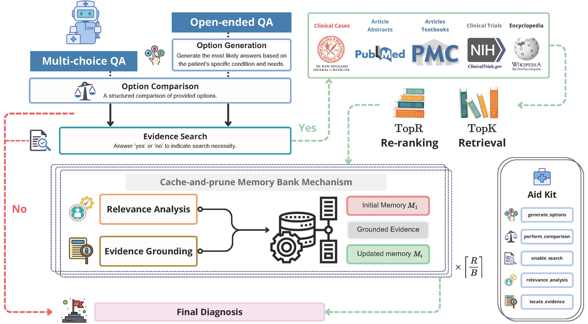 -
DocAgent: An Agentic Framework for Multi-Modal Long-Context Document Understanding
Li Sun, Liu He, Shuyue Jia, Yangfan He, Chenyu You
The 2025 Conference on Empirical Methods in Natural Language Processing (EMNLP 2025)See More
We introduce DocAgent, a multi-agent framework for long-context document understanding that imitates the human reading practice. Specifically, we first extract a structured, tree-formatted outline from documents to help agents identify relevant sections efficiently. Further, we develop an interactive reading interface that enables agents to query and retrieve various types of content dynamically. To ensure answer reliability, we introduce a reviewer agent that cross-checks responses using complementary sources and maintains a task-agnostic memory bank to facilitate knowledge sharing across tasks.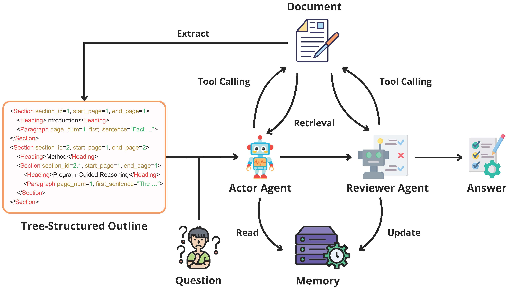 -
PodGPT: An Audio-augmented Large Language Model for Research and Education
Shuyue Jia, Subhrangshu Bit, Edward Searls, Meagan V. Lauber, Lindsey A. Claus, Pengrui Fan, Varuna H. Jasodanand, Divya Veerapaneni, William M. Wang, Rhoda Au, Vijaya B. Kolachalama
Nature npj Biomedical InnovationsSee More
Here, we introduce PodGPT, an audio-augmented large language model (LLM) tailored for research and education. The process began by leveraging publicly available generative AI auto-regressive language models across various scales. These models underwent continuous pre-training on a curated dataset of English CC-BY podcasts produced by scientific journals and clinical experts, as well as content from The New England Journal of Medicine (NEJM). The podcast corpus comprised over 3,700 hours of audio, covering diverse topics in science, research, and medicine, visually summarized in the accompanying word cloud. The next phase involved developing the software infrastructure, which included an inference engine for model deployment, a messaging queue, database integration, retrieval augmented generation (RAG) implementation, API microservices, and a responsive human-machine interface. This highly performant and robust system enabled users with internet access to engage seamlessly with current research and educational material via an adaptive chatbot. The chatbot supported multi-turn conversations across various languages, empowering users to access and interact with STEMM knowledge in a dynamic and accessible manner.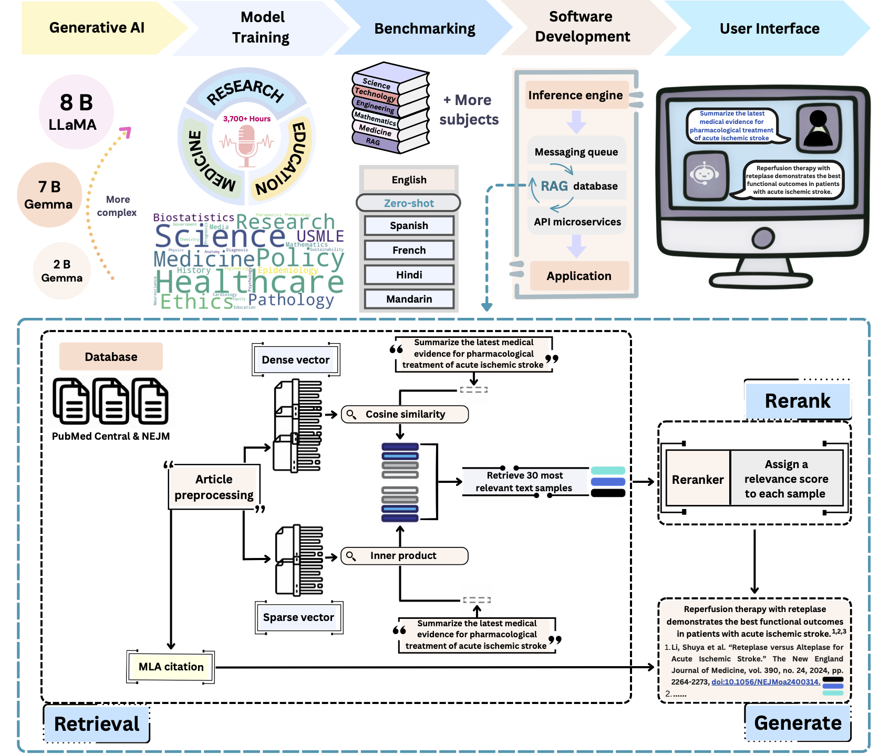 -
MedPodGPT: A Multilingual Audio-augmented Large Language Model for Medical Research and Education
Shuyue Jia, Subhrangshu Bit, Edward Searls, Lindsey A. Claus, Pengrui Fan, Varuna H. Jasodanand, Meagan V. Lauber, Divya Veerapaneni, William M. Wang, Rhoda Au, Vijaya B. Kolachalama
Technical ReportSee More
Here, we introduce MedPodGPT, an audio-augmented large language model (LLM) designed for medical research and education. Medical podcasts offer audio content rich in specialized terminology, diverse medical topics, and expert dialogues, helping the medical community stay current with the latest information. Integrating this content into LLMs can enhance their ability to provide up-to-date clinical information.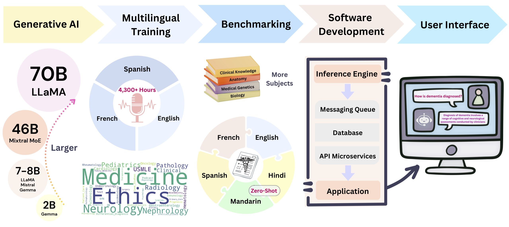 -
MedSyn: Text-guided Anatomy-aware Synthesis of High-Fidelity 3D CT Images
Yanwu Xu, Li Sun, Wei Peng, Shuyue Jia, Katelyn Morrison, Adam Perer, Afrooz Zandifar, Shyam Visweswaran, Motahhare Eslami, Kayhan Batmanghelich
IEEE Transactions on Medical Imaging (IEEE T-MI)See More
This work introduces an innovative methodology for producing high-quality 3D lung CT images guided by textual information. Specifically, we introduce a hierarchical scheme that uses a modified UNet architecture. We start by synthesizing low-resolution images conditioned on the text, serving as a foundation for subsequent generators for complete volumetric data. To ensure the anatomical plausibility of the generated samples, we provide further guidance by generating vascular, airway, and lobular segmentation masks in conjunction with the CT images.
Topic 2 - Computer Vision
-
No-reference Image Quality Assessment via Non-local Dependency Modeling
Shuyue Jia, Dingquan Li, Shiqi Wang
IEEE 24th International Workshop on Multimedia Signal Processing (IEEE MMSP)See More
-
A no-reference image quality assessment method based on non-local features learned by a graph neural network (GNN). The proposed quality assessment framework is rooted in the view that the human visual system perceives image quality with long-dependency constructed among different regions, inspiring us to explore the non-local interactions in quality prediction.
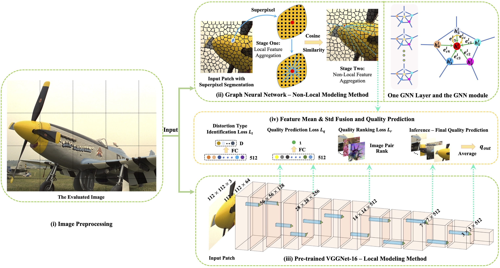 -
Learning From Mixed Datasets: A Monotonic Image Quality Assessment Model
Zhaopeng Feng, Keyang Zhang, Shuyue Jia, Baoliang Chen, Shiqi Wang
IET Electronics LettersSee More
We propose a monotonic neural network for Image Quality Assessment (IQA) model learning with different datasets combined. In particular, our model consists of a dataset-shared quality regressor and several dataset-specific quality transformers. The quality regressor aims to obtain the perceptual qualities of each dataset while each quality transformer maps the perceptual qualities to the corresponding dataset annotations with their monotonicity maintained.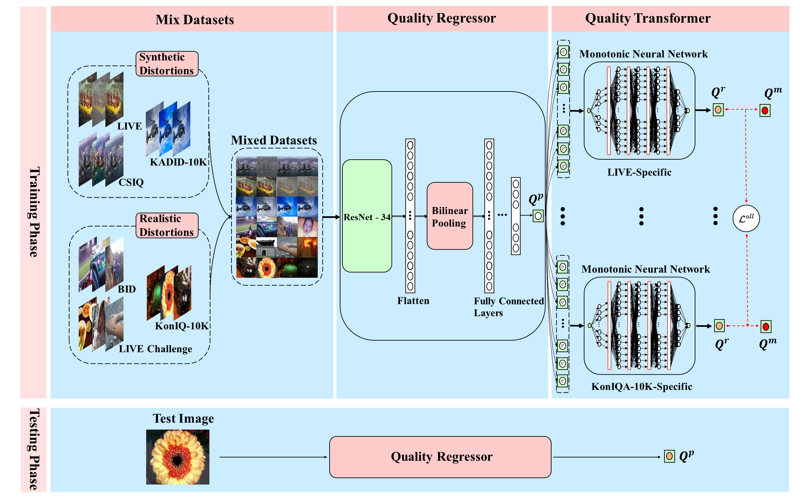
Topic 3 - Neuroscience
-
GCNs-Net: A Graph Convolutional Neural Network Approach for Decoding Time-resolved EEG Motor Imagery SignalsShuyue Jia, Yimin Hou, Xiangmin Lun, Yan Shi, Yang Li, Rui Zeng, Jinglei Lv
IEEE Transactions on Neural Networks and Learning Systems (IEEE T-NNLS)
See More
-
Traditional works classify EEG signals without considering the topological relationship among electrodes. Thus, a graph convolutional neural network is presented while cooperating with the functional topological relationship of electrodes.
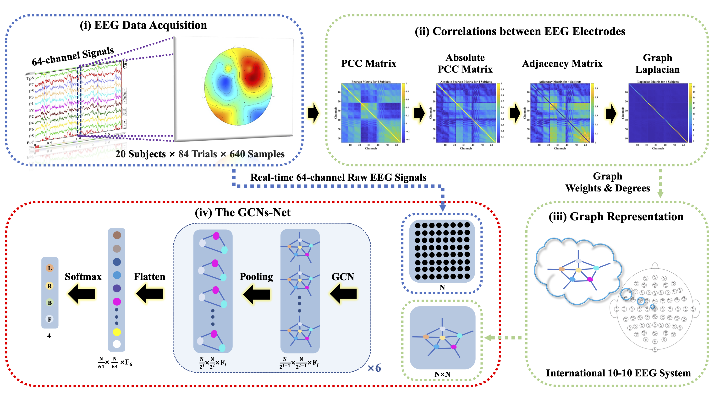 -
Deep Feature Mining via Attention-based BiLSTM-GCN for Human Motor Imagery Recognition
Yimin Hou, Shuyue Jia (Corresponding Author), Xiangmin Lun, Shu Zhang, Jinglei Lv
Frontiers in Bioengineering and BiotechnologySee More
-
This paper presents a novel deep learning approach designed toward both remarkably accurate and responsive motor imagery (MI) recognition based on scalp EEG. Bidirectional long short-term memory (BiLSTM) with the attention mechanism is employed, and the graph convolutional neural network (GCN) promotes the decoding performance by cooperating with the topological structure of features.
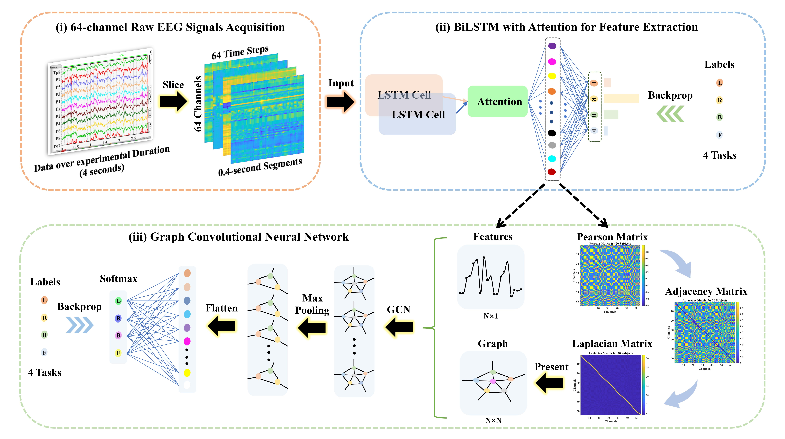 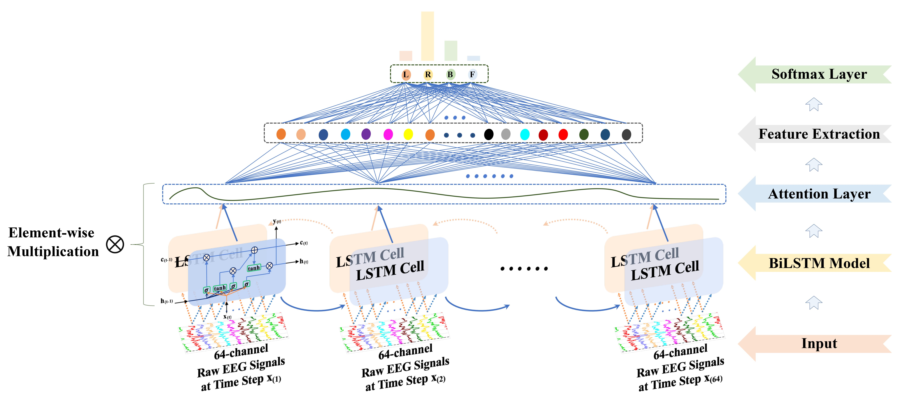 -
A Novel Approach of Decoding EEG Four-Class Motor Imagery Tasks via Scout ESI and CNN
Yimin Hou, Lu Zhou, Shuyue Jia, Xiangmin Lun
Journal of Neural EngineeringSee More
-
We presented a novel approach that could potentially improve the current stroke rehabilitation strategies by implementing a deep learning approach for an Electroencephalogram (EEG) based on MI Brain-Computer Interface System.
- Constructed 6 convolutional layers, 2 max-pooling layers, and 3 FC layers CNNs for four-class motor imagery classification through TensorFlow, with 50% dropout (spatial dropout after every Conv layer and regular dropout for FC layers) – 11.44% accuracy improvement, batch normalization (BN) – 10.15% improvement, and Short-cut Connection – 1.76% improvement to prevent overfitting, and achieved SOTA results: 94.50% accuracy on scout R5, 94.54% at subject level, and 96% for left fist prediction.
- Took charge of DNNs design, including methods comparisons, such as MLPs, CNNs, RNNs, and LSTMs, classification results calculations, and programming. 10 and 14 subjects’ data were utilized (19,320 and 27,048 samples in the experiments)
- Benchmark Dataset: EEG Motor Movement/Imagery Dataset.
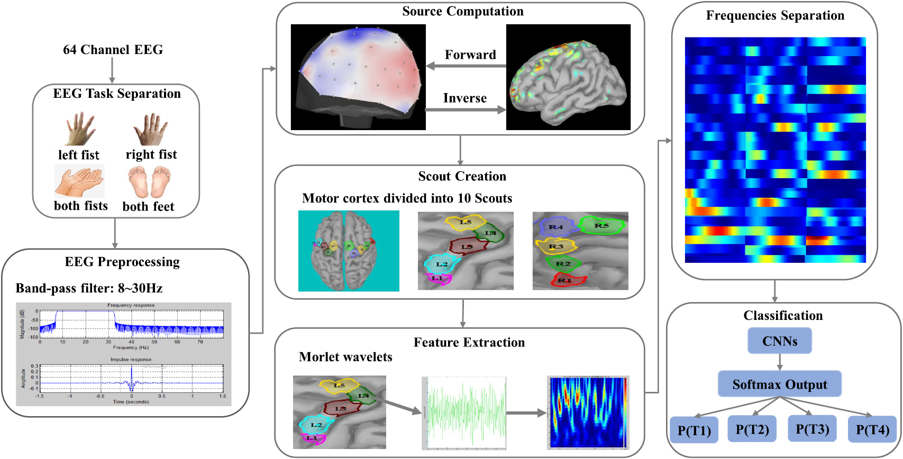 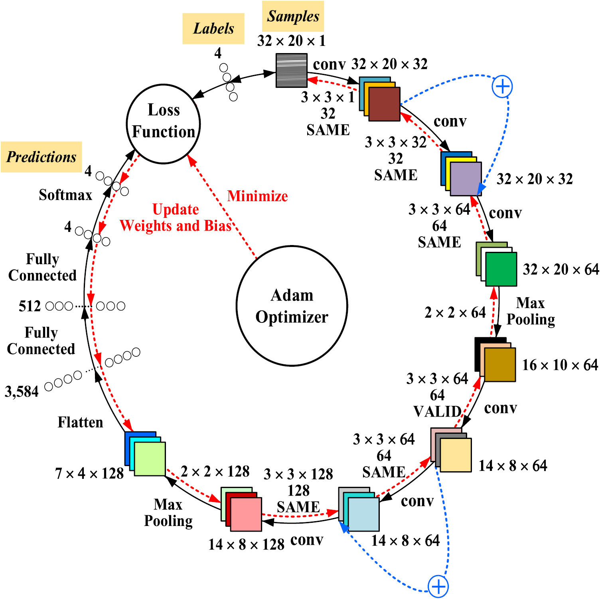
Topic 4 - Intelligent Technologies
-
PMU Measurements based Short-term Voltage Stability Assessment of Power Systems via Deep Transfer Learning
Yang Li, Shitu Zhang, Yuanzheng Li, Jiting Cao, Shuyue Jia
IEEE Transactions on Instrumentation and Measurement (IEEE T-IM) -
Improving Performance: A Collaborative Strategy for the Multi-data Fusion of Electronic Nose and Hyperspectral to Track the Quality Difference of Rice
Yan Shi, Hangcheng Yuan, Chenao Xiong, Qi Zhang, Shuyue Jia, Jingjing Liu, Hong Men
Sensors and Actuators B: Chemical
Teaching Experience
- Teaching Assistant, Spring 2025 Semester
ENG EC 327: Introduction to Software Engineering, Boston University
Academic Services
- Journal Reviewer of
IEEE Transactions on Pattern Analysis and Machine Intelligence (IEEE T-PAMI)
IEEE Transactions on Multimedia (IEEE T-MM)
IEEE Transactions on Circuits and Systems for Video Technology (IEEE T-CSVT)
IEEE Transactions on Neural Networks and Learning Systems (IEEE T-NNLS)
IEEE Transactions on Medical Imaging (IEEE T-MI)
IEEE Transactions on Biomedical Engineering (IEEE T-BME)
IEEE Transactions on Industrial Informatics (IEEE T-II)
IEEE Transactions on Human-Machine Systems (IEEE T-HMS)
IEEE Transactions on Affective Computing (IEEE T-AFFC)
IEEE Transactions on Cognitive and Developmental Systems (IEEE T-CDS)
IEEE Transactions on Emerging Topics in Computational Intelligence (IEEE T-ETCI)
IEEE Journal of Biomedical and Health Informatics (IEEE JBHI)
IEEE Journal of Selected Topics in Signal Processing (IEEE J-STSP)
IEEE Open Journal of the Industrial Electronics Society (IEEE OJIES)
IEEE Open Journal of the Computer Society (IEEE OJCS)
IEEE MultiMedia (MM)
IEEE Sensors Journal
Computer Vision and Image Understanding (CVIU)
IET Image Processing
IET Science, Measurement & Technology
Journal of Medical Internet Research (JMIR) - Conference Reviewer of
The International Conference on Learning Representations (ICLR) 2025, 2026 - Committee Member of
- Local Conference Committee, IEEE Boston Section
- Speaker Program Chair (Keynotes & Panel Sessions) and Steering Committee, 2026 IEEE International Conference on AI and Data Analytics (ICAD)
- Speaker Program Chair (Keynotes & Panel Sessions) and Steering Committee, 2025 IEEE International Conference on AI and Data Analytics (ICAD)
- Scientific Program Committee Member, 2025 AMIA Clinical Informatics Conference
- Member of Sigma Xi, IEEE, ACM, ACL, and AAAI
Selected Awards
-
2025 IEEE Boston Section Arthur Winston Student Award, IEEE Boston Section
"For outstanding contributions to the Boston Section Local Conference Committee"
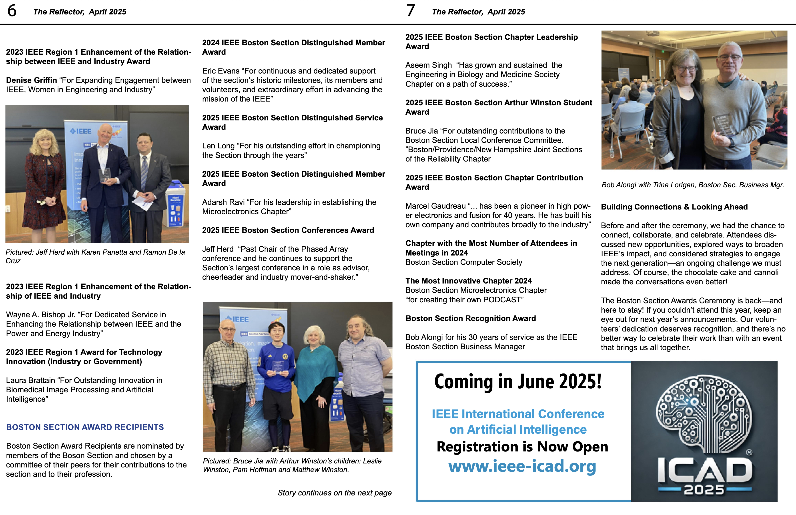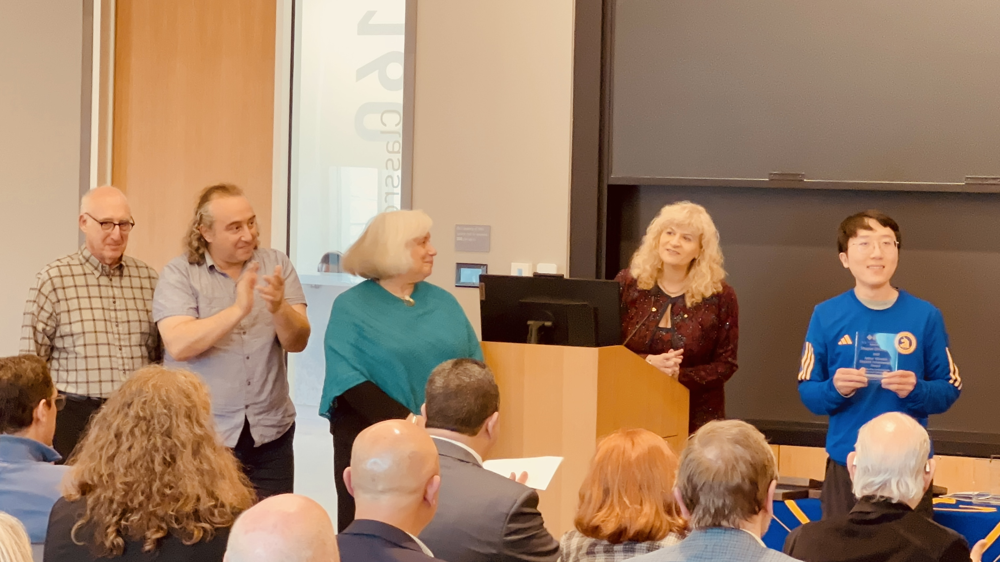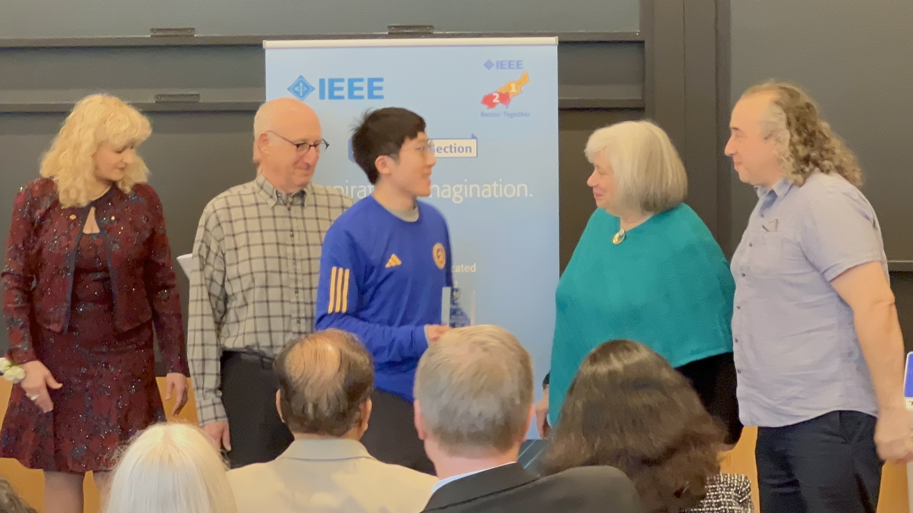 -
Wiley Top Cited Article 2023-2024, Wiley Top Cited Papers, Wiley
"Our work has been recognized as a top cited article in Electronics Letters"
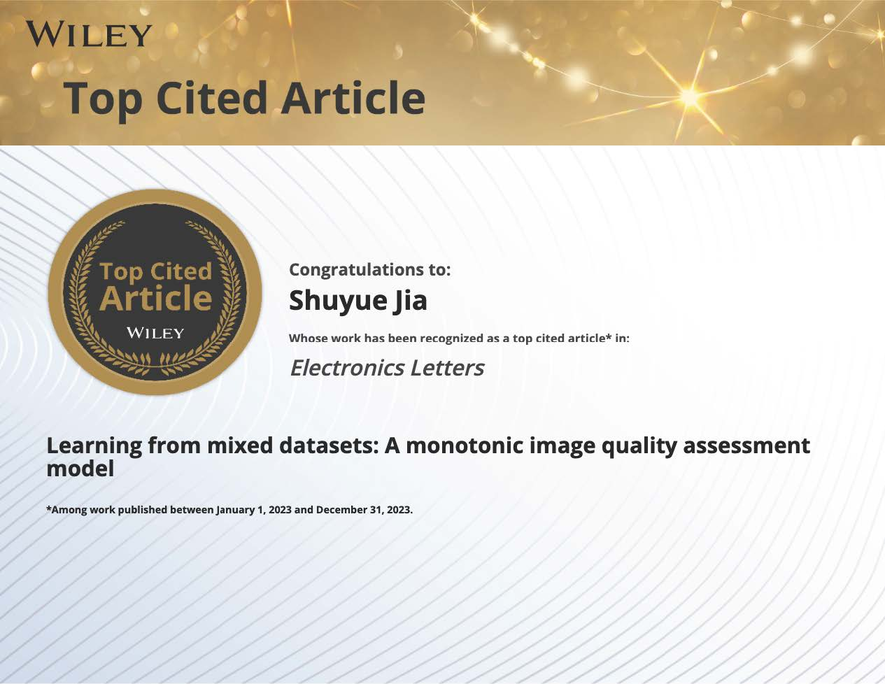 -
CityU Top 5 Runner, City University of Hong Kong
Athlete
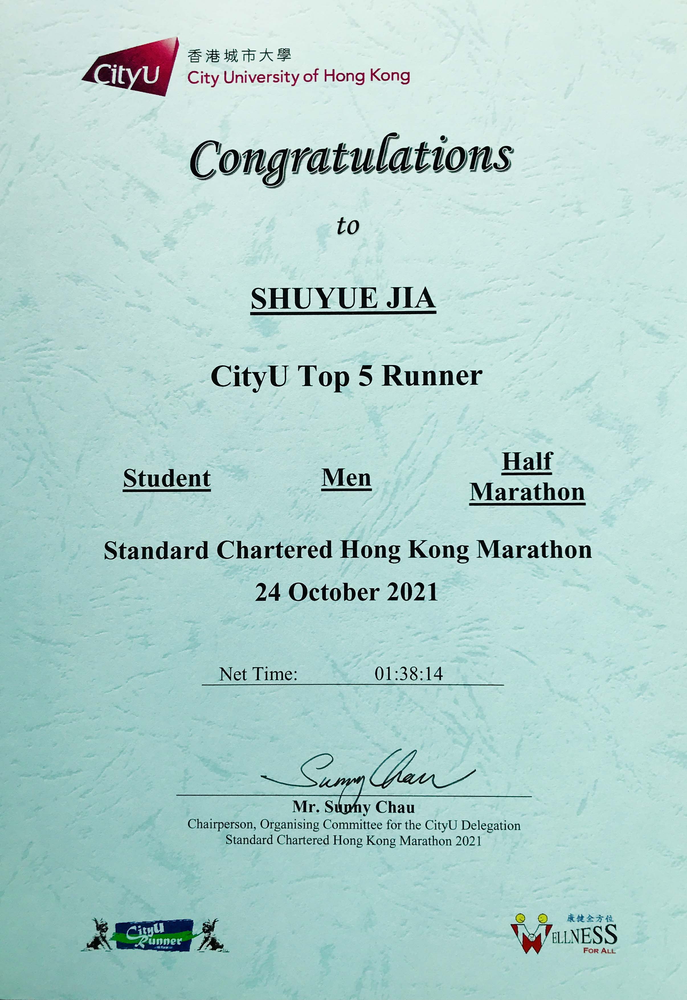 -
Outstanding Athlete, Northeast Electric Power University
Athlete

-
3000-meter Steeplechase, The 45th Northeast Electric Power University Games
The 7th Place in college

-
2015 National High School Math League, China
Second Prize
-
The 32nd Chinese Physics Olympiad (CPhO), China
Third Prize
International Marathon Athlete Activities
-
2025 Boston Half Marathon
-
2025 The 129th Boston Marathon, Abbott World Marathon Majors
-
2024 Boston Half Marathon
-
2023 Standard Chartered Hong Kong Marathon, Full Marathon
-
2021 Hangzhou International Marathon, Half Marathon
-
2021 Standard Chartered Hong Kong Marathon, Half Marathon
-
2018 National Marathon Championships (Jilin City Station), Full Marathon
-
2017 National Marathon Championships (Jilin City Station), Half Marathon